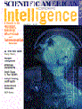
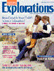
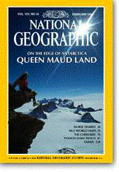

Subscribe to Scientific American's exciting monthly publication. To subscribe, just click the "Subscribe" link or you can call 800-333-1199 (US & Canada); 515-247-7631 (International) or fax your request to 712-755-7118.
Customer Care Site You can check the status of your subscription, change your address and much more!
Gift & Purchase Orders You can send a gift or use a Purchase Order for your subscription
Ordering
Back Issues
By visiting this page you can
view and order back issues of Scientific American. For additional
information, please contact backissues@sciam.com.
Experts@sciam.com
Have you ever wondered how
ball lightning forms? Or if humans are still evolving? We'll query
the experts for an answer. You can send your question through the
Ask
the Experts page or by
email to experts@sciam.com.
Please include your name,
general location, and email address. Because of the volume of
questions, we regret that we cannot promise that all will be
answered. The most interesting will be posted on this
site.
Subscribe to Scientific American Presents, a new quarterly publication from the editors of Scientific American. A wide range of timely contemporary subjects are covered in depth in each remarkable single-theme issue. To subscribe, just click the "Subscribe" link or you can call 888-403-9009 (US only) or fax your request to 712-755-7118.
Subscribe to Scientific American Explorations. The new and exciting science and technology magazine for families. To subscribe, just click the "Subscribe" link or you can call 800-285-5264 or fax your request to 712-755-7118.
Scientific
American
415 Madison Avenue
New York, NY 10017-1111
The Classroom Edition
Newspaper
The centerpiece of The Wall Street Journal Classroom Edition program
is a full-color student newspaper, published monthly from
September to May. Regular features focus on business, economics,
careers, entrepreneurship, technology, personal finance and global
interdependence. Articles are drawn directly from the pages of the
daily Journal and are enhanced by award-winning color charts, graphs
and illustrations.
The Classroom Edition Teacher
Guide
The newspaper is supported each month by a comprehensive,
interdisciplinary Teacher Guide that includes a lesson plan or
activity for each article. The guide offers practical applications of
basic skills such as decision making, problem solving, statistical
analysis, critical thinking, writing and researching.
The Classroom Edition Video
The Classroom Edition program also has optional videotapes (four each
semester) produced by CNBC, The segments in these lively half-hour
newscasts relate to articles in the newspaper and give teachers
maximum flexibility to use the videotapes as an introduction to class
discussion, as a review or as a stand-alone presentation.
To order, call 1-800-544-0522 or use the Subscription order form.
The Wall Street Journal Classroom
Edition
P. O. Box 300
Princeton, NJ 08543-0300
National
Geographic
One of a kind! Every school, teacher,
and student must experience the pleasures of leafing through copies
of the National Geographic magazine, receiving quite an education in
the process! Absolutely essential for the social studies programs in
both elementary and secondary schools.
The National Geographic Society is
located at 1145 17th Street N.W., Washington, D.C. 20036. National
Geographic Membership:
For delivery in the UnitedStates, $ 27.00; For delivery outside the
U.S. and Canada for one year (12 issues), $ 45.00; For delivery into
Canada for one year (12 issues), $ 31.00. To order: U.S. and
Canada: 1-800-437-5521; International: 1-515-362-3353; For
customer service: U.S. and Canada: 1-800-647-5463; International:
1-813-979-6845, Monday through Friday, 7:30 a.m. to 4:30 p.m. ET.
Subscribe by mail: National Geographic Society, P.O. Box 11303, Des
Moines, IA 50340. Sign up for National Geographic Society membership
and enjoy NATIONAL GEOGRAPHIC magazine every month, as well as the
satisfaction of knowing you are helping our worldwide efforts to
expand geographic knowledge. The National Geographic Society
Education Foundation was established in 1988 through an initial grant
of 20 million dollars from the Society. The
Education Foundation provides a
permanent and expanding source of financial support for exemplary
geography education programs. Our mission is to revitalize the
teaching and learning of geography in the nation's K-12 classrooms.
We currently award more than three million dollars in grants annually
to programs nationwide. The Society continues to solicit individual
and corporate contributions to help support its educational goals.
Teacher
Grants: The classroom teacher is
an invaluable resource and an essential partner in improving
geographic literacy. To that end, the National Geographic Society is
committing resources so that teachers can make an even greater impact
in the classroom, school, district, and community. A total of fifty
thousand dollars is available to graduates of Alliance- and
Society-sponsored summer geography institutes to advance and help
improve the teaching of geography. Applicants must be a current
classroom teacher or school administrator. Birth
of the Society: On the evening
of January 13, 1888, thirty-three men traveled on foot, horseback,
and in horsedrawn carriages through the streets of Washington to the
Cosmos Club, then on Lafayette Square across from the White House.
They convened around a large mahogany table to discuss "the
advisability of organizing a society for the increase and diffusion
of geographical knowledge." The entity they were about to create
would become the largest nonprofit scientific and educational
institution in the world, The National Geographic Society.
 Childhood
Education This award winning
journal features authoritative articles about innovative classroom
practices, vital issues affecting education, children and families;
child growth and development theory; hands-on classroom activities;
reviews of new children's books, videos, software and professional
resources. In publication since 1924, Childhood Education is
published six times per academic year. The annual volume includes an
annual theme issue and an international theme issue.
The Association for Childhood Education
International (ACEI), dedicated to the dual mission of
promoting 1) the inherent rights, education and well-being of
children from infancy through early adolescence, and 2) high
standards of preparation and professional growth for educators.
ACEI holds an annual conference
each year. To receive additional information about the conference,
contact the ACEI conference department at aceiconf@aol.com
or telephone 1-301-570-2111, toll free in the USA and Canada
1-800-423-3563, FAX 1-301-570-2212. For membership or general
information, contact Marilyn Gardner at aceihq@aol.com.
Childhood
Education This award winning
journal features authoritative articles about innovative classroom
practices, vital issues affecting education, children and families;
child growth and development theory; hands-on classroom activities;
reviews of new children's books, videos, software and professional
resources. In publication since 1924, Childhood Education is
published six times per academic year. The annual volume includes an
annual theme issue and an international theme issue.
The Association for Childhood Education
International (ACEI), dedicated to the dual mission of
promoting 1) the inherent rights, education and well-being of
children from infancy through early adolescence, and 2) high
standards of preparation and professional growth for educators.
ACEI holds an annual conference
each year. To receive additional information about the conference,
contact the ACEI conference department at aceiconf@aol.com
or telephone 1-301-570-2111, toll free in the USA and Canada
1-800-423-3563, FAX 1-301-570-2212. For membership or general
information, contact Marilyn Gardner at aceihq@aol.com.
National
Geographic Traveler
If you like to travel, this is the
publication for you. From the National Geographic Society, this
magazine has articles and photography about places near and far, many
that you may have already visited or will visit some day. The
following excerpt from a recent issue depicts Callaway Gardens in
Western Georgia. Near Pine Mountain, Georgia, lies Callaway Gardens,
the 14,000-acre (5,666-hectare) resort and horticultural vision of
Cason and Virginia Callaway. Set among one of the most innovative
indoor-outdoor garden complexes in the world are a 349-room inn,
cottages, luxury villas, seven restaurants, a golf course, and miles
of hiking and biking trails. Callaway Gardens has the largest
tropical butterfly conservatory in the country and&emdash;with more
than 700 varieties&emdash;one of the world's largest collections of
cultivated azaleas. Other typical topics in the same issue of the
magazine might include South Australia, San Diego, A New Mexico
Drive, and the Wild Caribbean. An example of regular departments in
each issue of the magazine and what they might include: Weekends:
Maastricht, Netherlands; Traveling Easy: Taking advantage of the
concierge; Lodgings of Note: Sooke Harbour House, Vancouver Island,
Canada; Nature Travel: Audubon's Institute of Desert Ecology; Value
Vacations: Good Deals in Venice, Italy; Side Trips: Letchworth State
Park, New York, U.S.A.; Bomarzo, Italy; Dyersville, Iowa, U.S.A.;
Butte B&B Salisbury, Maryland, U.S.A. For delivery to the U.S.
for one year( 6 issues) $ 17.95; For delivery for one year outside
the U.S. and Canada ( 6 issues) $ 25.50; For delivery to Canada for
one year (6 issues) $ 22.75. E-Mail: traveler@nationalgeographic.com
 The
School Administrator is
AASA's monthly award-winning journal featuring articles on the issues
and concerns you face every day in your school district, while
offering a variety of possible solutions. The American Association of
School Administrators (AASA) was founded in 1865, and is the
professional organization for over 16,500 educational leaders across
North America and in many other countries. The four major focus areas
for AASA are: Improving the condition of children and youth;
preparing schools and school systems for the 21st century; connecting
schools and communities; enhancing the quality and effectiveness of
school leaders. The organization, with a staff of 50, is one of
elementary and secondary education's longstanding professional
organizations. American Association of
School Administrators, 1801 North Moore Street, Arlington, VA
22209, phone: (703)528-0700, fax: (703)841-1543 AASA Membership
Categories: Active $264, Regular membership category for individuals
in school administration. Includes full voting and office-holding
rights. Associate $239, Designed for people actively interested in
educational administration work. No voting or office-holding rights.
College Professor $114, For full-time professors of educational
administration and/or supervision. Student $50, Open to any student
currently in an educational administration graduate degree program
and who has not been an AASA member in the past. Limited to a maximum
of three years. To join AASA, contact: membership@aasa.org
The
School Administrator is
AASA's monthly award-winning journal featuring articles on the issues
and concerns you face every day in your school district, while
offering a variety of possible solutions. The American Association of
School Administrators (AASA) was founded in 1865, and is the
professional organization for over 16,500 educational leaders across
North America and in many other countries. The four major focus areas
for AASA are: Improving the condition of children and youth;
preparing schools and school systems for the 21st century; connecting
schools and communities; enhancing the quality and effectiveness of
school leaders. The organization, with a staff of 50, is one of
elementary and secondary education's longstanding professional
organizations. American Association of
School Administrators, 1801 North Moore Street, Arlington, VA
22209, phone: (703)528-0700, fax: (703)841-1543 AASA Membership
Categories: Active $264, Regular membership category for individuals
in school administration. Includes full voting and office-holding
rights. Associate $239, Designed for people actively interested in
educational administration work. No voting or office-holding rights.
College Professor $114, For full-time professors of educational
administration and/or supervision. Student $50, Open to any student
currently in an educational administration graduate degree program
and who has not been an AASA member in the past. Limited to a maximum
of three years. To join AASA, contact: membership@aasa.org
 Ancestry
is the premier magazine for those interested in genealogy,
genealogists, or genealogical pursuits. A bimonthly publication of
Ancestry Incorporated in Orem, UT, Ancestry deals with any and all
aspects of family history and genealogical research. The magazine is
a formidable guide to an array of resources, and includes information
on genealogical computing, abstracting, transcribing, and extracting
documents, information on new genealogical books, ethnic origins,
pedigree charting, and case studies, to mention a few. The magazine
is an extremely helpful source in getting linked up with the LDS
Family History Library in Salt Lake City, an internationally known
resource for genealogical researchers. A few minutes spent browsing
through Ancestry magazine and you will be anxious to try to piece
together your family history. The magazine will have you thinking
about and using terms like vital records, cemetery inscriptions,
probate files, census schedules, military pensions, land deeds,
published historical and biographical works, and other genealogical
tools in no time! Subscriptions are $21 annually. Call toll free:
1.800.262.3787. Mail to: Ancestry Magazine, 266 West Center Street,
Orem, UT 84058. Homepage: http://www.ancestry.com.
E-Mail: LSzucs@ancestry.com
Ancestry
is the premier magazine for those interested in genealogy,
genealogists, or genealogical pursuits. A bimonthly publication of
Ancestry Incorporated in Orem, UT, Ancestry deals with any and all
aspects of family history and genealogical research. The magazine is
a formidable guide to an array of resources, and includes information
on genealogical computing, abstracting, transcribing, and extracting
documents, information on new genealogical books, ethnic origins,
pedigree charting, and case studies, to mention a few. The magazine
is an extremely helpful source in getting linked up with the LDS
Family History Library in Salt Lake City, an internationally known
resource for genealogical researchers. A few minutes spent browsing
through Ancestry magazine and you will be anxious to try to piece
together your family history. The magazine will have you thinking
about and using terms like vital records, cemetery inscriptions,
probate files, census schedules, military pensions, land deeds,
published historical and biographical works, and other genealogical
tools in no time! Subscriptions are $21 annually. Call toll free:
1.800.262.3787. Mail to: Ancestry Magazine, 266 West Center Street,
Orem, UT 84058. Homepage: http://www.ancestry.com.
E-Mail: LSzucs@ancestry.com

 Children's
Software Revue
is an independent bi-monthly newsletter
designed to help parents and teachers find quality children's
software. Children's Software Revue helps parents, teachers, and
librarians of children aged 3 to 15 better use computers by providing
timely, accurate, objective information about children's software.
They do not make any money from software sales or take advertisements
from software publishers. In just one issue, you'll find reviews of
over 120 late-breaking titles. A subscription is $29 per year for 6
ad-free issues. As a subscriber, you'll be eligible to use the free
Software Watch[TM] service. If you see a children's program
advertised, you can simply call the toll free number (or send a fax
or e-mail) to get their quick evaluation. In the rare case that they
don't know about the program, they will research the market until an
answer can be given. E-Mail to Circulation: Sevchuk@aol.com;
Toll Free: 1-800-993-9499. Fax: 908-284-0405. Children's Software
Review, 44 Main Street, Flemington, NJ 08822.
Children's
Software Revue
is an independent bi-monthly newsletter
designed to help parents and teachers find quality children's
software. Children's Software Revue helps parents, teachers, and
librarians of children aged 3 to 15 better use computers by providing
timely, accurate, objective information about children's software.
They do not make any money from software sales or take advertisements
from software publishers. In just one issue, you'll find reviews of
over 120 late-breaking titles. A subscription is $29 per year for 6
ad-free issues. As a subscriber, you'll be eligible to use the free
Software Watch[TM] service. If you see a children's program
advertised, you can simply call the toll free number (or send a fax
or e-mail) to get their quick evaluation. In the rare case that they
don't know about the program, they will research the market until an
answer can be given. E-Mail to Circulation: Sevchuk@aol.com;
Toll Free: 1-800-993-9499. Fax: 908-284-0405. Children's Software
Review, 44 Main Street, Flemington, NJ 08822.
 The
Reading Teacher
(circulation 68,000) is a
peer-reviewed professional journal published for those interested in
children's literacy learning. Eight issues per year are sent to an
audience of preschool and elementary teachers, reading specialists,
administrators, and teacher educators. Each issue includes effective
teaching tips, insights into theory, research findings, and reviews
of children's literature. The International Reading
Association was founded in 1956 when the International Council for
the Improvement of Reading Instruction (ICIRI) and the National
Association for Remedial Teaching (NART) merged. William S. Gray was
the first IRA president. IRA published its first official Association
journal, The Reading Teacher, in 1956. Classroom teachers, reading
specialists, consultants, administrators, supervisors, college
teachers, researchers, psychologists, librarians, media specialists,
students, and parents make up the Association's more than 95,000
members in 99 countries. The Association represents over 350,000
individuals and institutions through its affiliated councils
worldwide. The International Reading Association's four professional
journals are The Reading Teacher , directed toward preschool,primary,
and elementary school educators (eight issues a year, circulation
70,500); Journal of Adolescent & Adult Literacy, directed toward
middle school, secondary, college, and adult educators (eight issues
a year, circulation 20,000); Reading Research Quarterly, technically
oriented for those interested in reading theory and research (four
issues a year, circulation 10,000); and Lectura y vida , a
Spanish-language journal edited and produced in Latin America (four
issues a year, circulation 2,100). Mission: The International Reading
Association seeks to promote high levels of literacy for all by
improving the quality of reading instruction through studying the
reading processs and teaching techniques; serving as a clearinghouse
for the dissemination of reading research through conferences,
journals, and other publications; and actively encouraging the
lifetime reading habit. The International Reading Association works
year-round to plan, coordinate, and deliver professional conferences
throughout the world at the local, state, and regional levels. Also,
the Association works with national affiliates in organizing
international conferences to further support the reading profession
worldwide. For more information, contact the Conferences Division,
International Reading Association, 800 Barksdale Road, PO Box 8139,
Newark, DE 19714-8139. Phone: 302-731-1600, ext. 216. E-mail:
conferences@reading.org
Address correspondence to: International Reading Association, Public
Information Office, 800 Barksdale Road, PO Box 8139, Newark, DE
19714-8139 USA; Telephone: 302-731-1600; Fax: 302-731-1057; Email:
nmeyer@reading.org or
pubinfo@reading.org;
Homepage: http://www.reading.org/about/
The
Reading Teacher
(circulation 68,000) is a
peer-reviewed professional journal published for those interested in
children's literacy learning. Eight issues per year are sent to an
audience of preschool and elementary teachers, reading specialists,
administrators, and teacher educators. Each issue includes effective
teaching tips, insights into theory, research findings, and reviews
of children's literature. The International Reading
Association was founded in 1956 when the International Council for
the Improvement of Reading Instruction (ICIRI) and the National
Association for Remedial Teaching (NART) merged. William S. Gray was
the first IRA president. IRA published its first official Association
journal, The Reading Teacher, in 1956. Classroom teachers, reading
specialists, consultants, administrators, supervisors, college
teachers, researchers, psychologists, librarians, media specialists,
students, and parents make up the Association's more than 95,000
members in 99 countries. The Association represents over 350,000
individuals and institutions through its affiliated councils
worldwide. The International Reading Association's four professional
journals are The Reading Teacher , directed toward preschool,primary,
and elementary school educators (eight issues a year, circulation
70,500); Journal of Adolescent & Adult Literacy, directed toward
middle school, secondary, college, and adult educators (eight issues
a year, circulation 20,000); Reading Research Quarterly, technically
oriented for those interested in reading theory and research (four
issues a year, circulation 10,000); and Lectura y vida , a
Spanish-language journal edited and produced in Latin America (four
issues a year, circulation 2,100). Mission: The International Reading
Association seeks to promote high levels of literacy for all by
improving the quality of reading instruction through studying the
reading processs and teaching techniques; serving as a clearinghouse
for the dissemination of reading research through conferences,
journals, and other publications; and actively encouraging the
lifetime reading habit. The International Reading Association works
year-round to plan, coordinate, and deliver professional conferences
throughout the world at the local, state, and regional levels. Also,
the Association works with national affiliates in organizing
international conferences to further support the reading profession
worldwide. For more information, contact the Conferences Division,
International Reading Association, 800 Barksdale Road, PO Box 8139,
Newark, DE 19714-8139. Phone: 302-731-1600, ext. 216. E-mail:
conferences@reading.org
Address correspondence to: International Reading Association, Public
Information Office, 800 Barksdale Road, PO Box 8139, Newark, DE
19714-8139 USA; Telephone: 302-731-1600; Fax: 302-731-1057; Email:
nmeyer@reading.org or
pubinfo@reading.org;
Homepage: http://www.reading.org/about/


Cobblestone
Publishing has been producing high-quality nonfiction
magazines for young readers since 1980. Our philosophy is that
nonfiction, whether it deals with history, world cultures, or
science, should offer not only fascinating pleasure reading, but also
act as a significant resource to help with school work. It is our
goal to prove, issue after issue, that "content" does not mean
"boring!" To ensure that our magazines consistently reach this goal,
we work with editors, writers, consulting editors, and advisors who
are leaders in their respective fields. And, our magazines are not
advertiser-supported, which means your young readers are exposed only
to accurate nonfiction about their world, without
commercialization.
Cobblestone:
The American History Magazine for Young
People. Every
full color, 49-page Cobblestone issue is packed with compelling and
lively articles and sidebars. They use historic photographs, original
illustrations, primary documents, maps, activities, and contests to
complement the text and appeal to young readers. Cobblestone ensures
historical accuracy and interesting reading by working closely with
historians, leading children's writers, and museum personnel. Each
issue offers recomendations for the reader who wants to "dig deeper."
For grades 4-9.
Faces:
The Magazine About People
Travel the world without
leaving your home or classroom! A magazine that supports the National
Geography Standards, Faces uses a balance of feature articles,
activities, first-hand accounts, folktales and legends to introduce
young readers to diverse cultures throughout the world. Picture
stories, original illustrations, maps, and time lines complement each
themed issue. Themes focus on a country or group of people and offer
a view of the similarities and differences between cultures. Many of
the writers are leading anthropologists and archaeologists and write
firsthand accounts of their professional experiences. Each issue
contains at least one activity along with a detailed listing of
supporting resources. A great way for students in grades 4-9 to tour
and understand our global village!
Calliope:
World History for Young People
Your passport to world history with exciting and
provocative themes that will enhance your curriculum! Topics chosen
by the editors cover framework-mandated subjects in a way no textbook
can. Each 49-page issue offers major articles that broaden the
reader's understanding of the theme. Maps and time lines, carefully
selected illustrations, and relevant art from major museums
complement the text. Pique student interest with a wide variety of
activities and regular departments like "Fun with Words," "Past is
Present," and "Digging Up the Past" which focuses on recent
archaeological discoveries and interviews with experienced and
budding archaeologists. For grades 4-9.
SUBSCIPTION INFORMATION:
Published 9 times per year (September-May). U.S.A.= $26.95, Canada =
$37.40, Other Foreign = $34.95. Subscribe or get a Cobblestone
catalog by calling 1.800.821.0115
or e-mailing them at custsvc@cobblestone.mv.com.

Click
Here to Go to The Social Studies
Educator
|

Click
Here to Go to Southeast Regional Social Studies
Conference
|

Click
Here to Go to the Alabama Council for the Social
Studies
|

Inquiries and/or comments about this site should be sent to jstockard@edla.aum.edu